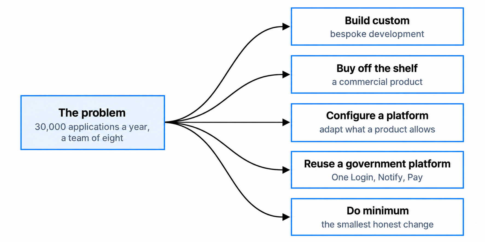
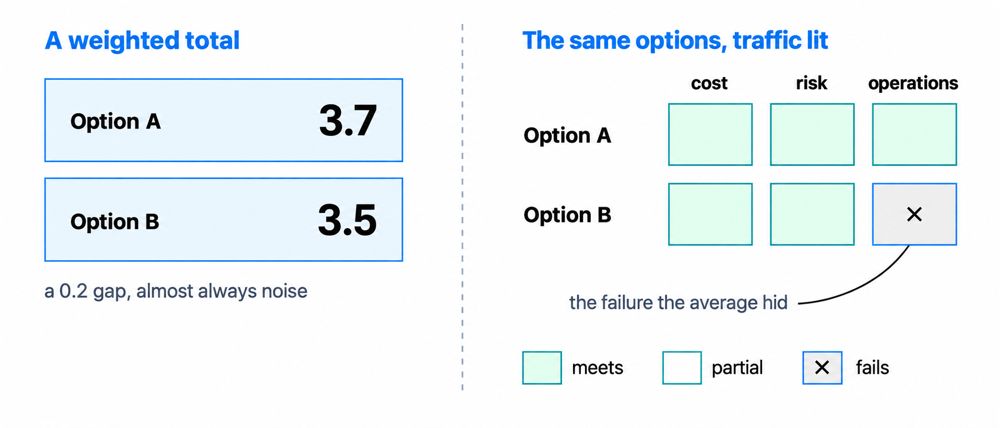
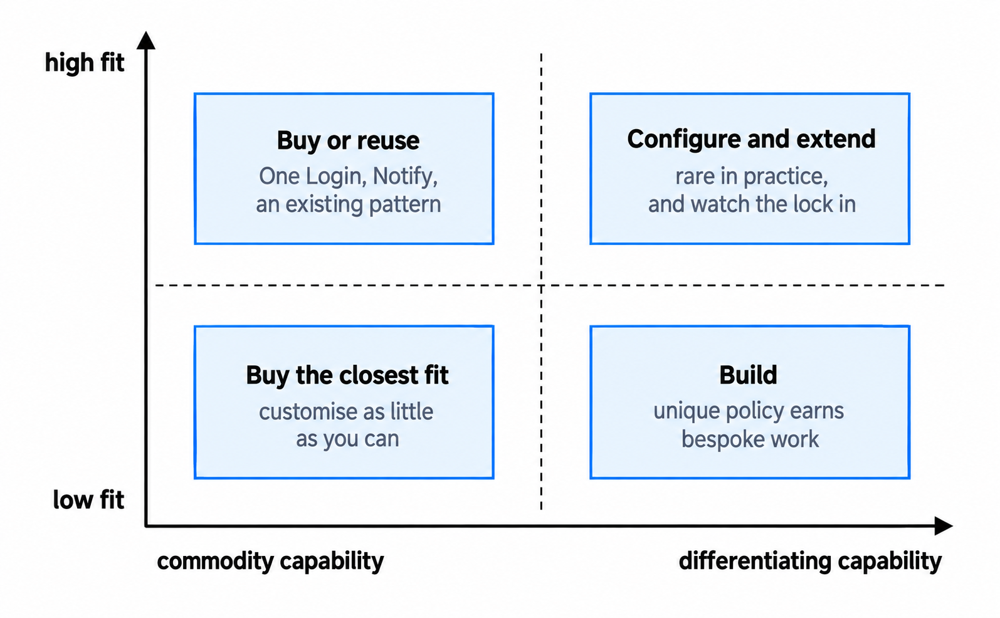
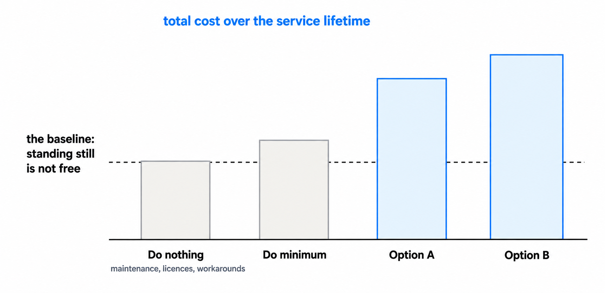

Solution options and option appraisal
Generate credible options, compare them fairly and make a defensible recommendation.
You'll come away with:
- A way to turn the problem, requirements and current-state evidence into credible options.
- A clear distinction between an architecture comparison and formal government appraisal.
- A practical method for comparing trade-offs without hiding them behind a score.
- A structure for making the recommendation, uncertainty and decision authority clear.
Start with the decision, not the preferred answer
Option appraisal continues the work from the earlier lessons. Use the evidence about the problem, outcomes, stakeholders, requirements, constraints and current state to state the decision before naming products or technologies.
For example:
How should the organisation replace its case-management capability before support ends, while meeting its user, migration, security, operational and affordability requirements?
This leaves several approaches open and shows what evidence the comparison needs. "Which case-management product should we buy?" assumes that buying is already the right answer. Also define the boundary: complete service approaches, sourcing models, hosting models and individual components are different levels of decision and are difficult to compare fairly.
Know what kind of appraisal you are doing
An architecture options paper and a formal government appraisal are related, but they are not the same thing. A team may use a short options paper to decide how to integrate two systems or where a responsibility should sit. The evidence and challenge should be proportionate to the cost, risk, complexity, uncertainty and difficulty of reversing the decision.
HM Treasury's Green Book is mandatory for UK government departments and arm's-length bodies when developing proposals involving significant public spending. Its appraisal process moves from rationale and objectives through longlist and shortlist appraisal to a preferred option that optimises value for money.
Architecture evidence can inform feasibility, constraints, integration, security, operability, technology risk and whole-life implications. It cannot replace economic, commercial, financial or delivery analysis. Work with the relevant professions. The Solution Architect may develop or recommend technical options; the appropriate decision-maker or governance body approves the proposal.
Generate a broad longlist
Begin with different ways of achieving the outcome, not several versions of a favoured approach. The longlist might vary the scope, service model, delivery organisation, implementation approach or sourcing model. Reuse, purchase, configuration, custom build and combinations of these may all be credible.

Generate the longlist with people who hold different evidence, including users, operations, commercial and delivery colleagues, specialists and owners of dependent services. Discard an option only for a recorded reason: it cannot meet an objective or mandatory constraint, is not feasible, or evidence shows that another limitation makes it unsuitable. Do not retain a weak option to flatter the preferred one.
For formal Green Book appraisal, the longlist should be wide enough to avoid overlooking better ways of meeting the objectives. The Green Book recommends, but does not mandate, its options framework filter and says a shortlist should generally contain around five options. That is guidance for this formal process, not a universal rule for every architecture decision.
Set the criteria before comparing options
Trace the criteria to outcomes, user needs, requirements, constraints, current-state risks, organisational strategy and applicable standards. A useful criterion can distinguish between options and affect the recommendation.
Typical areas to consider include:
- achievement of the intended outcome and user needs
- functional and quality requirements
- security, privacy and accessibility
- data, integration and migration
- delivery time, dependencies and team capability
- operability, support and ability to change
- whole-life cost, affordability and benefits
- commercial, supplier and exit risk
- sustainability, strategic fit and applicable government guidance
This is a prompt, not a standard checklist. Separate pass-or-fail conditions from criteria on which an option can perform better or worse. An option that fails a legal obligation or genuinely mandatory requirement should not survive because high scores elsewhere raise its average. If criteria are weighted, agree the weighting before scoring and record who agreed it and why.
Use scoring as an aid, not the decision
A comparison matrix can make evidence and disagreement visible; it does not turn judgement into an objective calculation. Define each score or rating, cite the evidence and explain important differences in words.

Apply mandatory gates before calculating totals and show the result by criterion. A weighted score can structure discussion, but a small difference is not decisive when the underlying estimates and judgements are uncertain.
Red, amber and green ratings can help when their definitions are clear. The Green Book's options framework filter uses them to screen choices during longlist appraisal. Formal shortlist appraisal goes further, using social cost-benefit or social cost-effectiveness analysis and considering unmonetisable effects, public-sector financial impact, distributional effects, risk and uncertainty.
Test important assumptions or weights across a credible range. If a minor change reverses the ranking, present the decision as finely balanced and identify the evidence that would help resolve it.
The matrix should expose the reasoning, not replace it.
Compare reuse, buy, configure and build without shortcuts
There is no universal order that selects the answer. For spend control, the Technology Code of Practice requires teams to consider all its points. Point 8 asks plans to show that sharing and reuse have been considered. Point 11 asks for the build-or-buy decision process, its connection to user needs or the problem, and compliance with contractual limitations.
An existing government service may be strongest when the team is eligible and it meets the need. A commercial product may suit common needs with limited adaptation. Configuration can preserve supplier support while fitting the service more closely. A custom build may suit unusual needs, limited market supply or requirements products cannot meet. Many solutions combine these approaches.

The diagram is a prompt, not a decision rule. Terms such as "commodity" and "differentiating" can frame the discussion, but product fit has no universal percentage threshold. Test it through requirements analysis, market research, demonstrations, prototypes or trials, including difficult scenarios and integrations.
Compare customisation, migration, accessibility, security, integration, team capability, supplier viability, licensing, contract terms, support, portability and exit. Include the skills and operating model needed after launch.
Use business as usual as the baseline
Business as usual describes what is expected if current arrangements continue. In formal Green Book appraisal it must enter the shortlist as the benchmark, even if it does not meet the proposal's objectives.

Business as usual is not free. Show the expected support, licensing, manual work, incidents, lost benefits, growing risk and eventual replacement or decommissioning costs. Use current-state evidence and explain how the position may change.
Keep "do minimum" separate. It is the least-cost change that can meet the objectives and critical success factors, not another name for doing nothing. It may be proportionate when it addresses the immediate need and a larger investment is not justified.
Compare whole-life effects
Purchase price or initial build cost is only part of the comparison. Consider discovery, procurement, implementation, integration, migration, parallel running, training, hosting, licences, support, change, exit and decommissioning. Use an appraisal period that fits the proposal and applicable guidance.
Benefits may include better user outcomes, time saved, reduced failure demand, lower risk or improved ability to respond to policy change. Define the recipient, measure and conditions for realisation.
Formal Green Book appraisal considers costs and benefits from the perspective of UK society, not only the delivery organisation's budget. Analysts distinguish social value from affordability and calculate the required measures. Architecture provides evidence about feasibility, resource use, service risks, dependencies and lifecycle consequences.
Use ranges or scenarios where evidence cannot support precision, and state what is included, excluded and assumed. Sunk costs should not determine what happens next, although the opportunity cost of existing assets may matter.
Make a recommendation, not a sales pitch
Describe each shortlisted option at a comparable level of detail. Show how it performs against the criteria, with its costs, benefits, risks, dependencies, assumptions and confidence in the evidence.
Then state the recommendation plainly:
We recommend Option B because it meets the mandatory requirements and offers the strongest balance of user benefit, delivery confidence and whole-life cost. It gives up some flexibility compared with Option C, and its supplier dependency will need an agreed exit plan.
This makes the accepted trade-off visible and separates recommendation from decision. Record the decision-maker, evidence, approval conditions and remaining risks. If the decision differs from the architecture recommendation, record that accurately.
State what would trigger review: a failed trial, a material change in demand, cost or policy, a supplier event, new security evidence, or an assumption crossing an agreed threshold. A defensible decision is tied to the evidence available at the time.
Questions to ask before recommending an option
- What exact decision are we making, and what is outside its scope?
- Which outcomes, requirements, constraints and current-state findings shape it?
- Have we generated genuinely different approaches?
- Why was each longlist option progressed or rejected?
- Which conditions are mandatory, and which criteria allow trade-offs?
- What happens under business as usual, and what does it cost?
- What are the whole-life costs, benefits, risks and dependencies?
- Where is the evidence weak, and could credible changes reverse the recommendation?
- Have the right users, specialists and decision-makers been involved?
- Who has authority to decide, and what would cause the decision to be revisited?
This guide describes practical option comparison for Solution Architects and explains where it connects to formal UK government appraisal. It is not a substitute for the Green Book, business case guidance or advice from departmental analytical, finance and commercial specialists.
Last reviewed September 2026 against the primary guidance below. Government policy and guidance change, so check the source before relying on it.